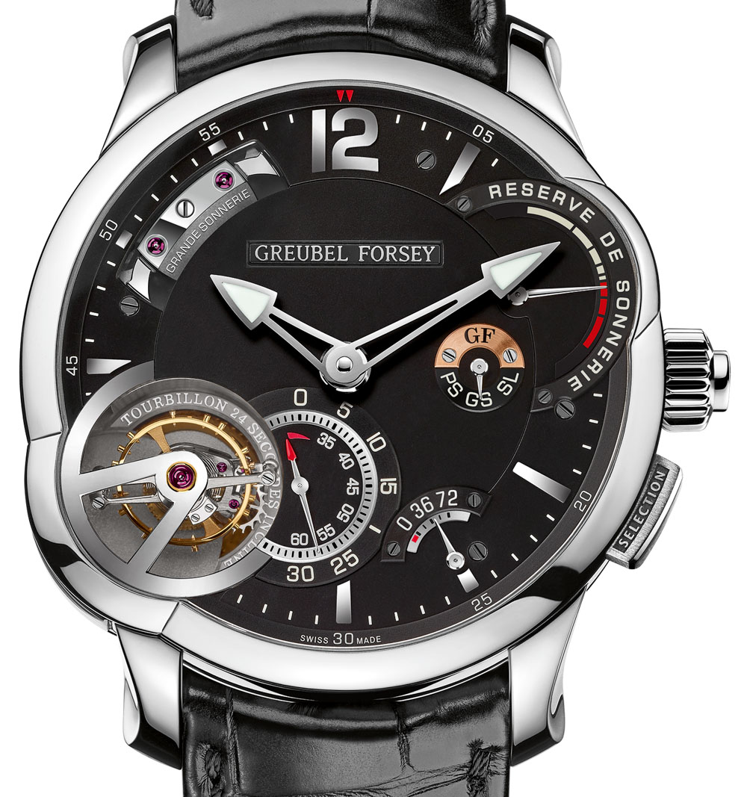
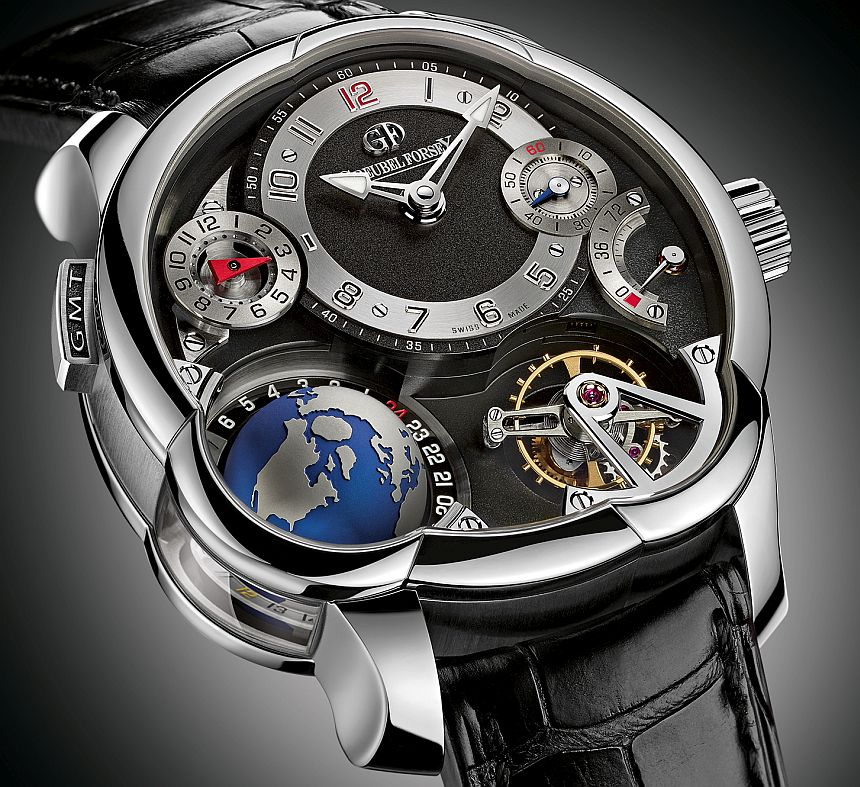
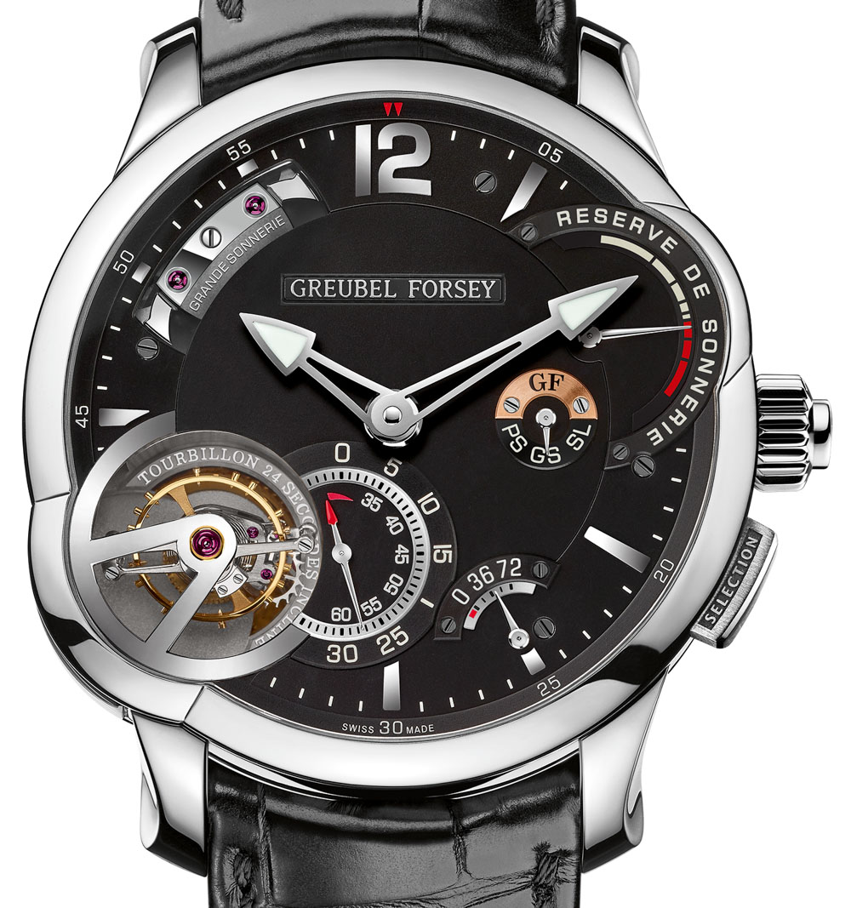
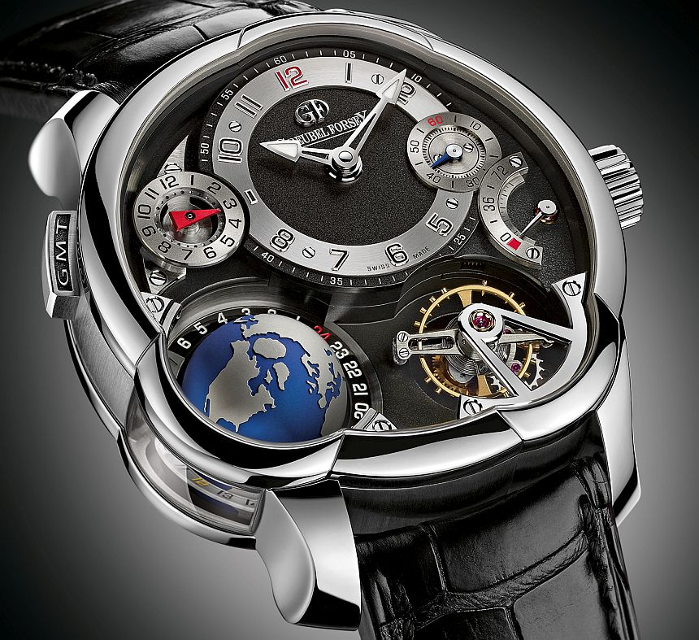

R$47.890,00
Greubel Forsey.
 



O relógio Greubel Forsey é reconhecido por suas inúmeras qualidades excepcionais. Sua precisão cronográfica, graças ao seu movimento altamente complexo e inovador, é uma das principais características elogiadas. Além disso, a atenção aos detalhes e o nível de acabamento impecável são evidentes em cada componente do relógio.
 Entrega em 7 dias para todo Brasil.
Entrega em 7 dias para todo Brasil. 12 em estoque.
12 em estoque.Informações
-
Inovação e Complexidade
Os relógios Greubel Forsey são conhecidos por sua sofisticação técnica e complexidade. A marca frequentemente empurra os limites da inovação relojoeira, incorporando várias complicações e mecanismos intricados.
-
Especialização em Turbilhão
Uma das especialidades da marca é o turbilhão, uma gaiola giratória que abriga o escapamento e a roda de balanço, projetada para neutralizar os efeitos da gravidade na precisão dos relógios mecânicos.
-
Produção Limitada
A Greubel Forsey mantém números limitados de produção, aumentando a exclusividade e raridade de seus relógios.
-
Acabamento e Artesanato
A marca dedica-se a um acabamento excepcional e artesanato. Seus relógios frequentemente apresentam materiais de alta qualidade e componentes intricados acabados à mão.
Ficha Técnica
- Tamanho44mm
- Peso120g
- PulseiraCouro de Jacaré
- Engrenagens175
- BotãoTitânio